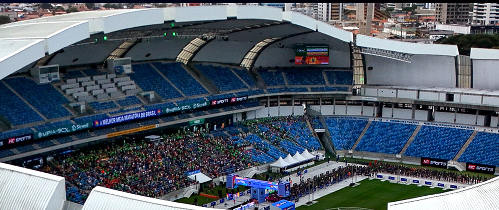
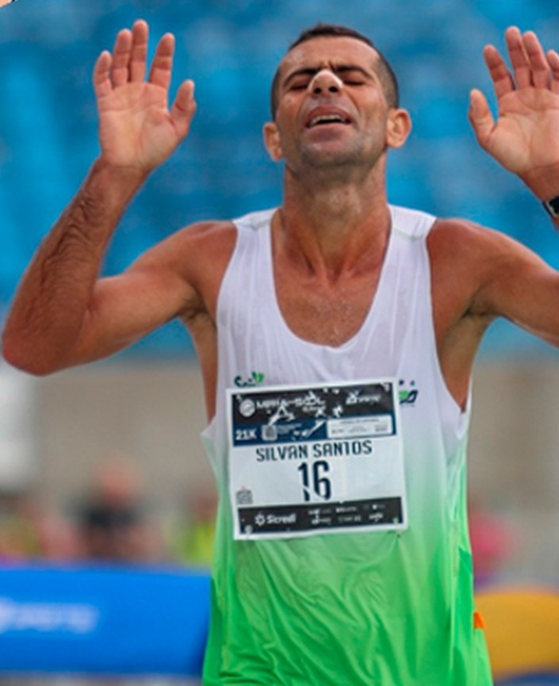
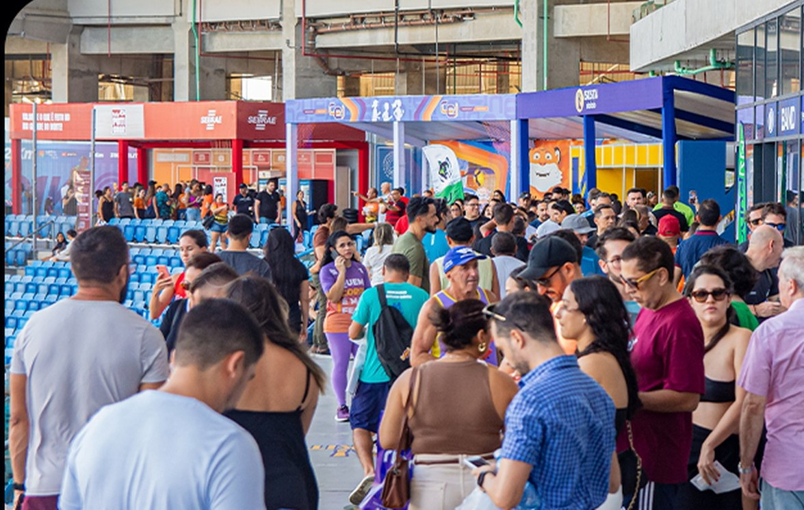
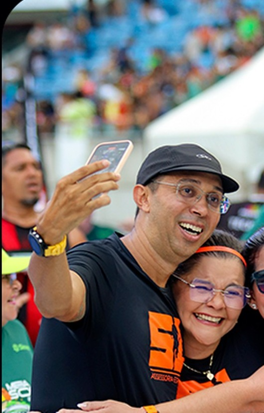
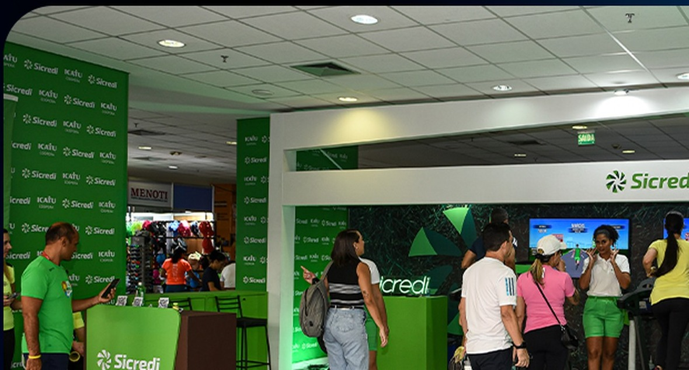
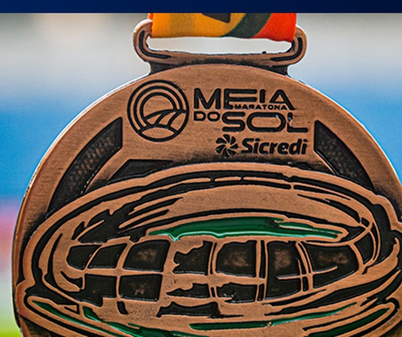

Sábado · 19 set
5K
Largadas a partir de 15h30, com saída e chegada na Arena das Dunas.
Ver prova 5K
A Meia Maratona do Sol reúne provas de 5K, 10K e 21,097K, além dos desafios de 26K e 31K. Largadas e chegadas acontecem na Arena das Dunas, em Natal.
Domingo · 20 de setembro
A primeira largada dos 21,097K acontece às 4h50. As ondas gerais começam às 5h e seguem até 5h25. Enquanto os atletas avançam, a cidade clareia e o percurso segue da Arena das Dunas em direção à Via Costeira, antes do retorno ao estádio.
Ver percurso e horáriosProvas 2026
Consulte data, horário e formato de cada prova. Os detalhes completos de categorias, premiação, elegibilidade e regras permanecem concentrados nas páginas de cada distância e no regulamento oficial.
Sábado · 19 set
Largadas a partir de 15h30, com saída e chegada na Arena das Dunas.
Ver prova 5KSábado · 19 set
Largadas a partir de 17h. O percurso passa pela UFRN e pelo entorno do Parque das Dunas.
Ver prova 10KDomingo · 20 set
A prova principal larga antes do amanhecer e retorna à Arena das Dunas após o trecho pela Via Costeira.
Ver prova 21KDois dias de prova
Desafio que combina a prova de 5K no sábado com a meia maratona no domingo.
Ver desafio 26KDois dias de prova
Desafio que combina os 10K do sábado com os 21,097K do domingo.
Ver desafio 31KLeitura narrativa do percurso. O mapa técnico e eventuais atualizações devem ser consultados na página oficial de percurso.
Percurso 21,097K
A largada acontece no gramado da Arena das Dunas. O trajeto atravessa a BR-101, segue pelo viaduto de Ponta Negra e alcança a Via Costeira, com o Morro do Careca no horizonte. A chegada volta a acontecer dentro da Arena.
Largada e chegada no estádio. É também onde se concentram a Expo, a entrega de kits e parte da programação do evento.
A experiência em imagens
As imagens da Meia do Sol são registros reais do evento. Arena, chegada, família, Expo, crianças e marcas fazem parte da mesma experiência — sem banco de imagens e sem encenação.






Escala e reconhecimento
atletas inscritos em 2025
passagens pela Arena em quatro dias
World Athletics
Confederação Brasileira de Atletismo
Patrimônio Cultural Imaterial do estado
Para quem vai correr
Na fase próxima ao evento, esta área assume prioridade na home. A comunicação fica mais objetiva para que horários, documentos, deslocamento e kit sejam encontrados sem esforço.
Orientações gerais, horários, serviços e informações importantes para os dias do evento.
Expo na Arena das Dunas, de 17 a 19 de setembro, das 9h às 20h.
Mapas técnicos, ondas, horários e atualizações específicas de cada distância.
Informações para quem vem de outras cidades e condições divulgadas pelos hotéis parceiros.
Regras oficiais de participação, categorias, documentação, premiação e operação da prova.
Depois da chegada
Resultados, certificado, fotos e histórico de participação devem estar reunidos no mesmo ambiente. O objetivo é facilitar a consulta e preservar a memória de cada edição.
Consultar resultadosNo produto final, os dados serão pessoais e vinculados ao histórico real do atleta.
Parceiros 2026
Patrocinadores, chancelas e realizadores fazem parte da experiência. A apresentação das marcas recebe espaço próprio, com hierarquia definida pelas cotas e sem competir com as informações do atleta.
Naming Rights

Patrocínio
Chancelas
Realização